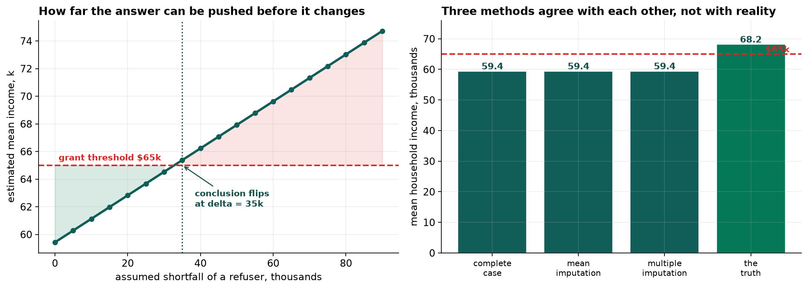

- Setting
- A county health department's community needs assessment. Fourteen hundred adults interviewed at clinics, with gaps in three columns that got there three different ways.
- The question
- How much higher is blood pressure per unit of BMI, and what is mean household income in the county? The first sizes an intervention. The second decides whether the county applies for a state grant.
- Why it matters
- Complete-case analysis would discard 717 of the 1,400 respondents. Whether that is harmless, costly or actively misleading depends on why each value is absent, and that is not a question about the size of the gap.
- What we do
- Find the gaps that are not blank, name the three mechanisms, score four methods against the values that were removed, repeat the whole study 150 times to measure how often each is right, and then handle the question that no method can answer.
This is a teaching dataset, so the removed values are on a Truth sheet and every method can be scored rather than argued about. Real work never has that sheet, which is exactly what makes the last section the important one.
Half the Study Has a Gap
Counting blank cells says 29.6 percent of respondents are missing something. The true figure is 51.2 percent, and everything in between is a gap wearing a disguise.
| Column | How the gap was recorded | What a tool does with it |
|---|---|---|
| bmi | Blank, or the text not measured | The text makes the whole column non-numeric, and the blank count comes out wrong |
| activity_min_wk | Coded -1 | Averages it. Minus one minute of exercise a week is a perfectly good number |
| income_k | Coded 999, or blank | Averages it. A household on 999 thousand dollars pulls the mean a long way |
The sentinels are the dangerous ones. A blank announces itself; every tool in the language has a function
for counting blanks. A -1 does not weaken the activity variable, it corrupts it,
and nothing will warn you, because as far as the arithmetic is concerned it is data.
![Four panels. Top left: a missingness map with every respondent as a column and three rows for bmi, activity and income, sorted into blocks by pattern. Top right: a horizontal bar chart of which columns go missing together, with 683 respondents missing nothing, about 310 missing bmi alone, and smaller bars for combinations. Bottom left: two overlaid histograms of systolic blood pressure, showing that respondents whose bmi is missing sit about 11 mm Hg to the right of those whose bmi was recorded. Bottom right: two overlaid histograms of household income, showing the people who declined earn roughly twice what the people who answered earn.](../assets/img/capstone-missing-firstlook.png)
Three Ways to Go Missing
The vocabulary decides what is possible, which is why it is worth being exact about.
| Mechanism | In this survey | Can it be fixed from the data? |
|---|---|---|
| Missing completely at random | The tablet failed to record activity for 14.4 percent of interviews | Yes. Those people look like everyone else, so dropping them costs precision and nothing else |
| Missing at random | BMI is missing where blood pressure was high and the respondent was older | Yes, but not by dropping rows. The information that predicts the gap is in the file |
| Missing not at random | People declined to give income because of what their income was | No. Nothing in the file distinguishes a refuser earning 200 from one earning 40 |
The middle name is a bad one. Nothing about missing at random is random. What it means is that the reason for the gap was recorded, somewhere, in a column you still have.
And you cannot test which one you have. Missing at random and missing not at random make identical predictions about the data you can see. The distinction is decidable here only because of a sheet that does not exist outside a textbook.
Four Methods, Scored Against the Truth
Each method estimates the same quantity: the adjusted association between BMI and systolic blood pressure. The complete data says 0.980 mm Hg per BMI unit, which is the answer the survey would have produced had nobody skipped anything.
| Method | Estimate | Standard error | |
|---|---|---|---|
| Complete data (Truth sheet) | 0.980 | 0.055 | the target |
| Complete-case, drop the row | 0.874 | 0.077 | low, and it used 683 people |
| Mean imputation | 0.895 | 0.072 | low |
| Single regression imputation | 1.324 | 0.063 | high, and the most confident of the four |
| Multiple imputation, m = 20 | 0.954 | 0.066 | closest |
Single regression imputation predicts each missing BMI from the other columns, including blood pressure, and then treats the prediction as a measurement. The imputed values agree with blood pressure perfectly, because they were built out of it, and the regression duly reports a stronger relationship than exists. It is also the narrowest interval of any method that used all 1,400 rows.
But one dataset is one draw, and three of these four intervals happen to contain the right answer. Judging a missing-data method by running it once is not possible.
Running the Whole Study 150 Times
The question that matters is not what a method returns once. It is how often its 95 percent interval contains the truth, which should be 95 percent of the time.
![Two panels. Left: the mean estimate from each of five methods over 150 runs with error bars, against a dashed line at the true value of 0.90. Complete data sits on the line, complete-case and mean imputation sit slightly below it, multiple imputation sits just below, and single regression imputation sits far above at 1.23. Right: a bar chart of how often each method's 95 percent interval contained the truth: complete data 96 percent, complete-case 83, mean imputation 78, single regression 3, multiple imputation 89, against a dashed line at the nominal 95 percent.](../assets/img/capstone-missing-coverage.png)
Single regression imputation is biased by 0.330, more than a third of the quantity being estimated, and its intervals are narrow enough that they miss almost every time. The most natural of the four fixes is the only catastrophic one, and on any single dataset it looks like the most precise.
Complete-case analysis is not neutral either. It cannot be, because whether a row survives depends on the outcome being modeled. Multiple imputation is much the best of the four and still short of 95 percent, because one column is missing not at random and no imputation model can repair that.
What Multiple Imputation Actually Does
The difference between the method that fails at 2.7 percent and the method that works is one word: noise. Both predict a missing BMI from the other columns. One writes the prediction down. The other draws from the distribution around it, twenty times, and carries the disagreement between those twenty answers into the standard error.
Filling a gap with one number claims the value is known. Filling it with twenty different numbers records that it is not, and the spread across draws here is 3.57 BMI units against an observed spread of 4.56.
The fraction of missing information says what the gaps cost in precision on this particular question: 25.4 percent. The 683 complete cases were worth about three quarters of a complete 1,400-person survey, which is a far better outcome than discarding the other 717 to find out.
The Question Nothing Can Fix
The second question is mean household income, and a state grant is available where that mean is below 65 thousand dollars.
| Method | Mean household income | Does the county apply? |
|---|---|---|
| Complete-case | 59.40k | yes |
| Mean imputation | 59.40k | yes |
| Multiple imputation, m = 20 | 59.42k | yes |
| The Truth sheet | 68.16k | no, it does not qualify |
Multiple imputation gave 59.42 against a complete-case 59.40. It did not help, and it was never going to. Every imputation model in the chapter assumes the data can explain the gaps. Here the gap is explained by income, and the file does not contain it.
Agreement between methods is not evidence. They agree because they share an assumption, and the assumption is wrong.
A Tipping Point Instead of an Estimate
What can be done is to state the size of the assumption the answer depends on. Suppose every refuser earns some amount more than the model predicts for them, and vary that amount.

The conclusion survives only while refusers earn less than 35 thousand more than the model predicts for them. Ask whether that is plausible and the answer is not difficult: people who decline to state their income on a government survey are not, as a rule, the ones earning below average. The Truth sheet puts the real figure near 52 thousand, half again past the tipping point.
That number, and not 59.4, is the honest deliverable. The recommendation that follows is to go and get the data: a follow-up on a random sample of even a hundred refusers would settle a question no amount of modeling can.
What This Does Not Settle
The 150-run study is specific to this population. These missingness rates, this estimand and this imputation model. The ordering of methods can change when any of them change. What does not change is that imputing without noise invents precision.
The missing-at-random assumption behind the BMI answer is itself untestable. It is supported here by the Truth sheet and by nothing else, and outside a textbook it is an argument about how the data was collected rather than a result.
Multiple imputation reached 88.7 percent, not 95. The income column contaminates the regression too, mildly. Reporting it as the method that works is accurate only in comparison with the others.
Every method here assumes its model of the missing values is roughly right. A badly specified imputation model fails in ways this comparison would not detect, because every arm of it used the same specification.
What to Watch
- ✓Count the gaps before you trust the count. Look at dtypes, minima and maxima on every column. A numeric column read as text, a minus one, a 999 and a 9999 are all missing values that will otherwise be analyzed as data.
- ✓Ask what predicts the gap, not how big it is. Fourteen percent missing completely at random is harmless. Thirty percent missing in a way that depends on the outcome is not, and the second one is not visible in a completeness report.
- ✓Never impute without noise. Filling a gap with a prediction and analyzing it as a measurement is the single worst option in this chapter, and it is the one that looks most reasonable in code review.
- ✓Put the outcome in the imputation model. Leaving it out biases the association toward zero. Including it is correct, and it is only dangerous when the imputation is deterministic.
- ✓Report the fraction of missing information. It says what the gaps cost on the specific quantity you are estimating, which is more useful than the share of rows that were incomplete.
- ✓When the mechanism cannot be tested, report a tipping point. How far the assumption has to move before the decision changes is a real deliverable. A point estimate that quietly assumes the untestable thing is not.
Missing Data in Data Science & AI
Most machine-learning pipelines handle missingness by whichever method is one line long, and the default is usually the mean. That choice is rarely revisited, and it is made in the part of the code nobody reviews.
| Where it appears | The usual default | What it assumes |
|---|---|---|
| A scikit-learn pipeline | SimpleImputer with the mean | Missing completely at random, and that shrinking the variance is free |
| Gradient boosting | Learned default directions for missing values | That the pattern of missingness is a legitimate predictor, which it often is and sometimes must not be |
| Feature stores | Backfill, or a sentinel like -1 | That downstream consumers know it is a sentinel |
| Survey and panel research | Multiple imputation with Rubin's rules | Missing at random, stated and defended rather than assumed |
| Clinical trials | Sensitivity analysis over departures from MAR | Nothing. That is the point of it |
A missingness indicator is worth its own thought. Whether a value was recorded is sometimes the most predictive feature available, and a model that uses it can be both accurate and unusable, because it has learned who gets tested rather than who is ill. The next chapter has a version of the same problem, and the one after that is entirely about it.
Donald Rubin gave the three mechanisms their names in 1976 and set out multiple imputation in 1987, including the rules for combining estimates across imputed datasets that the notebook uses. Roderick Little and Rubin's Statistical Analysis with Missing Data remains the standard reference. Stef van Buuren's chained-equations approach, MICE, is what made it practical for datasets with many columns of different types and is the algorithm behind both implementations used here. The delta-adjustment sensitivity analysis in Section 7 follows the approach the pharmaceutical regulators now expect for clinical trials, where the untestable assumption has to be stressed rather than stated.
The full project, step by step
The companion notebook finds the three sentinel codes, maps which columns go missing together, implements four methods and scores each against the Truth sheet, repeats the entire study 150 times to measure bias and interval coverage, shows what multiple imputation is doing by printing the same missing value imputed five different ways, and finishes with the delta-adjustment tipping point.
The dataset
(capstone-missing-data-imputation.xlsx) holds 1,400 respondents with the sentinel codes and
duplicate rows still in place, plus a Truth sheet carrying the values that were removed so
every method can be scored. Two written reports accompany it: a plain-language brief for
the county health director, and a technical report covering the mechanisms, the simulation
study and the sensitivity analysis.
🎓 Key Takeaways
- ✓More than half the gaps were not blank. Counting blanks found 29.6 percent of rows affected; the true figure was 51.2 percent, and the difference was sentinel codes that any tool would have analyzed as data.
- ✓What predicts the gap matters more than how big it is. Activity was missing completely at random and cost only precision. BMI was missing where the blood pressure reading was high, which is what makes dropping rows biased.
- ✓Single regression imputation covered the truth 3 percent of the time, biased by 0.330, while producing the narrowest interval of any method using all the rows. It is the most reasonable-looking fix and the only catastrophic one.
- ✓Multiple imputation reached 88.7 percent coverage against complete-case 82.7 and mean imputation 78.0, and used all 1,400 respondents rather than the 683 that were complete.
- ✓No imputation fixes missing not at random. All three feasible methods put mean income at 59.4 against a truth of 68.2, and agreed with each other because they shared the same wrong assumption.
- ✓When the mechanism cannot be tested, report the tipping point. The county's grant conclusion flips once refusers earn 35 thousand more than modeled, and the real gap is near 52.